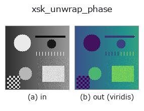

restoration op• 資料種類:image → image
• 呼叫:fullseye.apply(img, "xsk_unwrap_phase", a=0.5, b=0.5)(2-D 的模型是一張圖 + 兩個純量旋鈕 a,b∈[0,1])

*圖為在 128×128 合成輸入上實際執行的輸出。左為輸入，右為輸出。點雲以俯視散點顯示(亮度 = z)，一維序列為折線，體資料為沿 z 的最大值投影，影片為中間影格，複數影像為振幅；無法成像的回傳值直接顯示數值。*
*輸出以類 viridis 偽彩色顯示(深紫 = 小，黃 = 大)，便於讀取距離、相位、方向、深度這類「量的場」。*
*旋鈕 a 不改變輸出(實測: 0.1 / 0.5 / 0.9 相同)。*
*旋鈕 b 不改變輸出(實測: 0.1 / 0.5 / 0.9 相同)。*
換別的影像(合成場景 / 照片 / 硬幣。上排為輸入，下排為對應輸出。旋鈕取預設):
▸ xsk_unwrap_phase: other inputs (docs site)
*未展示彩色 (H,W,3) 輸入: 此運算子把顏色通道當作第三個空間軸(跨通道)。請按通道分別呼叫。*
相位展開（phase unwrapping）。將輸入 [0,1] 視為相位 [-pi, pi]，以 `skimage.restoration.unwrap_phase 去除 2*pi 的折返（wrap），之後透過 signed01` 在保持符號的情況下轉回 [0,1]（0 -> 0.5）。
> 以下的詳細說明為原文 —— 摘要與標題已翻譯。
`a, b` は未使用。干渉縞など周期的にラップした位相画像の連続化に使う op で、
一様なグラデーションやランダムノイズなど元々位相らしくない入力では意味のある
結果にならないことがある。
• gallery2d_smoothing_rank 族使用指南
• 範例資料目錄(下載 URL / 授權) —— 2-D 用 skimage.data(BSD/公有領域)加合成圖,3-D 給出真實資料源(Stanford/PDS 等)的下載 URL。
• 運算子來歷與參考文獻 —— 該運算子族所依據的研究/方法出處。
• 演算法的正典(作者・年份)與用途見上面的族使用指南。
下面的程式已確認可以執行(與圖相同的輸入)。在 Studio 說明中，此區塊會變成按鈕，可當場載入並執行。
xsk_unwrap_phase 0.50 0.50
▸ Load this pipeline · Load & run
• gallery2d_smoothing_rank — py -3.11 examples/gallery2d_smoothing_rank.py
image 作為輸入)identity · gaussian · mean_box · bilateral · unsharp · median · min_filter · max_filter
restoration)xsk_inpaint · xsk_richardson_lucy · xcv_inpaint · xsk2_wiener · xcv3_inpaint_ns · iv_richardson_lucy · iv_wiener_deconv_spatial · iv_unsharp_deblur
*Provenance: ops.py — 2D 運算子登記表。本條目由 tools/opdocs.py md 自動產生(請勿手動編輯)。*
© 2026 Kazufumi Furuse — Fullseye operator documentation. Licensed under Apache-2.0.
{kind=link}